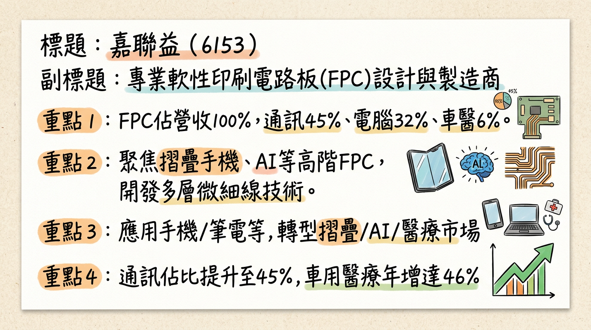
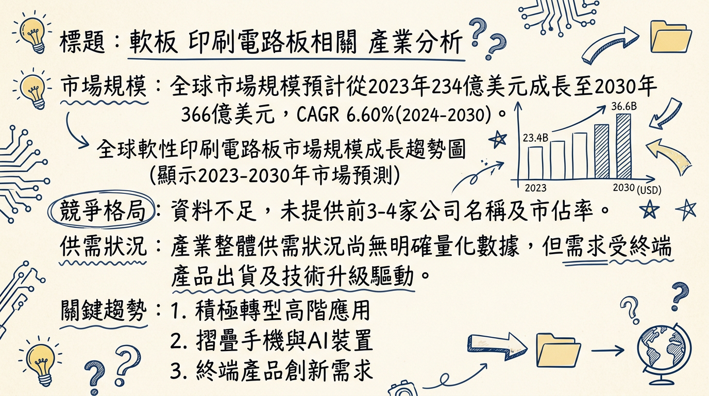
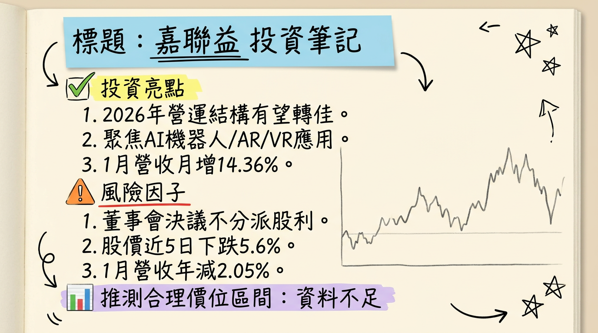

6153 嘉聯益 深度研究報告
一句話摘要
嘉聯益正經歷從傳統消費性電子 FPC 供應商，向高附加價值的 AI 裝置、摺疊手機、機器人及醫療應用轉型。公司短期雖仍處於虧損調整期，但透過新技術（如矽光子CPO、機器人感知平台）與產品組合優化，預計 2026 年有望迎來營運結構改善與獲利能力提升的轉捩點。
公司概覽
嘉聯益（6153）主要從事軟性印刷電路板（FPC）的設計、研發、製造、加工及買賣業務，產品廣泛應用於手機、筆記型電腦、平板電腦、液晶顯示器及消費性電子產品等領域。公司積極轉型，聚焦摺疊手機、AI裝置（AI手機/筆電、AI眼鏡）、穿戴式裝置、機器人及醫療設備等高階應用，並持續開發多層板、微細線路與模塊疊構等高階技術。
營收結構
根據 2025 年前三季營收結構，公司產品組合已見調整：
| 產品類別 | 2025年前三季營收佔比 | 2024年同期營收佔比 |
|---|
| 通訊電子 | 45% | (未提供具體數字) |
| 電腦類 | 32% | 45% |
| 車用與醫療 | 6% | (年增達 46%) |
| 其他/非公開 | 17% | (計算而得) |
製造基地
嘉聯益設有台灣觀音新廠（獲美系客戶資金與設備援助）、台北廠（高技術前段製程），以及中國大陸昆山廠及蘇州廠（中後端製程）。公司亦持續評估在越南及美國進行布局。
目前未有 2024-2026 年各製造基地的具體營收貢獻比例資料。
核心競爭優勢
高階應用轉型與技術領先： 積極佈局摺疊手機、AI裝置（AI手機/筆電、AI眼鏡、AI機器人）、穿戴式裝置及醫療設備等高成長領域，並專注多層板、微細線路、模塊疊構等高密度 FPC 技術開發，符合未來電子產品輕薄化、高頻高速趨勢。
前瞻技術合作與佈局： 與工研院合作開發矽光子 CPO 專案（預計 2026 Q1 驗證），以及機器人「靈巧手」感知平台（預計 2026 Q3 驗證，Q4 導入醫療），為中長期成長提供新的動能。
美系大客戶供應鏈地位： 為美商蘋果公司供應鏈成員，有望受惠於 iPhone 17 系列新機的「薄化」趨勢，帶動高階軟板與模組解決方案需求雙位數成長。
綠色製造與產業合作： 導入低碳電漿製程技術，推動低碳節能軟板，符合全球環保趨勢，有助提升企業形象與長期競爭力。
財務分析
月營收趨勢 (2025年8月至2026年1月)
| 月份 | 金額 (億元新台幣) | 月增率 MoM (%) | 年增率 YoY (%) |
|---|
| 2026/01 | 4.70 | 14.36 | -2.05 |
| 2025/12 | 4.11 | 9.29 | -20.26 |
| 2025/11 | 3.76 | -10.29 | -33.44 |
| 2025/10 | 4.19 | -21.53 | -25.97 |
| 2025/09 | 5.35 | 9.07 | -20.90 |
| 2025/08 | 4.90 | 4.51 | -24.19 |
季度數據
2025年第三季財務表現：
- 季營收：新台幣 14.94 億元
- 毛利率：-22.13%
- 營業利益率：-40.85%
- 稅後淨損：新台幣 4.74 億元
- EPS (每股稅後虧損)：新台幣 -0.75 元
2025年第三季虧損較前一季及去年同期顯著收斂，主要受惠於匯兌利益帶動業外收入增加 2.1 億元。
全年度營收與 EPS 趨勢
| 年度 | 全年營收 (億元新台幣) | 全年EPS (新台幣元) |
|---|
| 2024 (實際) | 72.82 | -4.41 |
| 2025 (累計至Q3) | 42.04 | -2.86 |
| 2025 (預估全年) | 54.11 | (未提供具體預估) |
法說會重點 (2025年11月18日)
- 轉型方向： 公司已從傳統消費性電子轉向折疊手機、AI裝置、穿戴、機器人、醫療等高成長應用，並布局矽光子與機器人感知平台等新技術。
- AI 機器人： 被定位為嘉聯益「下一個主要目標」，軟板在機器人領域對「細、軟、密」的高彎折壽命與耐高低溫特性需求高。
- 機器人感知平台： 與工研院合作開發「靈巧手」感知平台，預計於 2026年第三季 完成手臂整合架構驗證，並規劃於 2026年第四季 導入醫療場域測試。管理層對全面放量時間點持保守態度，表示「還不敢給明確年份」。
- 穿戴與 AR/VR 裝置： 已從雙層、四層板快速進入六層以上高密度結構，相關大型訂單是目前成長最快的業務之一。
- 矽光子 CPO 專案： 預計於 2026年第一季 完成模組化驗證，可望應用於機器人高頻感測、自駕車 LiDAR 與醫療設備。
- 營運展望： 嘉聯益短期仍在虧損調整期，但管理層強調隨著產品組合往 AI 機器人、穿戴與 AR/VR 等高附加價值應用傾斜，加上成本與產能配置優化，待終端需求與庫存回到健康水位後，公司營收與獲利結構可望自 2026年起 逐步轉佳，產能利用率回升。
- 2025年定位： 為體質調整年，積極拓展客戶群，尤其在折疊屏手機和 AI 手機/筆電等新應用產品方面。
券商觀點
目前搜尋結果中，未找到明確且近期的券商目標價報告（2025-2026年）。
| 券商名稱 | 目標價 (新台幣) | 評等 | 日期 |
|---|
| 未提供 | 未提供 | 未提供 | 2025-2026年無近期報告 |
財報深度分析
利潤率趨勢 (近8季)
| 季度 | 營收 (億元新台幣) | 毛利率 (%) | 營業利益率 (%) | 稅後淨利率 (%) | 每股虧損 (元) |
|---|
| 2025年Q3 | 14.94 | -18.99 | -35.12 | -31.75 | -0.75 |
| 2025年Q2 | (未提供) | -18.04 | -36.23 | -46.84 | -0.39 |
| 2025年Q1 | (未提供) | -30.73 | -53.21 | -51.50 | (未提供) |
| 2024年Q4 | (未提供) | -15.54 | -32.53 | -29.34 | (未提供) |
| 2024年Q3 | (未提供) | -7.63 | -21.66 | -57.92 | (未提供) |
| 2024年Q2 | (未提供) | -6.38 | -20.94 | -18.85 | (未提供) |
| 2024年Q1 | (未提供) | -20.95 | -39.03 | -34.19 | (未提供) |
| 2023年Q4 | (未提供) | -3.00 | -16.55 | -21.48 | (未提供) |
嘉聯益近年的利潤率持續為負值，反映出終端需求疲軟、同業競爭激烈以及公司在轉型期的營運調整壓力。2025 年前三季累計營收較去年同期衰退 25.4%。儘管本業持續虧損，2025 年第三季稅後淨損已顯著收斂，主要受惠於當季高達 2.1 億元的匯兌利益等業外收入。營收結構顯示電腦類產品比重下降，通訊電子、車用與醫療比重提升，反映產品組合正逐步往高階轉移，但效益尚未完全體現於本業毛利率。
存貨分析
法說會提及供應鏈庫存去化已近完成，預期終端需求回穩後，產能利用率可望回升。這暗示先前可能存在庫存調整壓力，但目前正朝健康水位邁進。
未找到近 4 季存貨金額與存貨週轉天數的最新資料。
資本支出
未找到 2025-2026 年的最新資本支出具體金額。公司法說會表示將持續投入研發與資本支出以支持新技術開發，未來越南及美國等地亦會依客戶需求進行布局。營運活動現金流持續為負數，顯示公司目前仍處於投資擴張及調整期。
股權異動
- 現金增資： 瀚宇博（PCB廠商）於 2025 年參與嘉聯益的現金增資案，認購 5.88 億元，共 4.2 萬張普通股，每股發行價格為 14 元。認購完成後，瀚宇博對嘉聯益的持股比例將升至 27.64%，目的為長期投資並改善關聯企業損益。
- 股利政策： 嘉聯益董事會於 2026 年 2 月 24 日決議不分派股利。2024 年因虧損擴大，每股虧損 4.38 元，故未配發股利。
- 董監事/大股東申報轉讓、庫藏股買回、可轉換公司債(CB)： 未找到 2025-2026 年的最新資料。
產業分析
市場規模與成長
軟性印刷電路板（FPC）市場預計將從 2023 年的約 234 億美元 成長至 2030 年的約 366 億美元。從 2024 年到 2030 年，全球 FPC 市場的複合年增長率（CAGR）預計為 6.60%。市場需求主要受終端產品出貨量及技術升級（如摺疊手機、AI 裝置）驅動。
競爭格局
全球 FPC 市場競爭激烈，主要廠商分佈於日本、韓國、台灣及中國大陸。
| 公司名稱 | 總部所在地 | 產品特色/市場地位 |
|---|
| ZDT (臻鼎-KY) | 台灣 | 全球領先 PCB 製造商，涵蓋 FPC、HDI、SLP 等，蘋果等一線客戶。 |
| TTM Technologies | 美國 | 主要 PCB 供應商，服務於航空、國防、醫療、工業、網絡通信。 |
| Fujikura | 日本 | FPC、光纖及電纜供應商，技術實力雄厚。 |
| Nippon Mektron | 日本 | 全球 FPC 主要供應商，廣泛應用於智慧手機、平板電腦。 |
| Young Poong Group | 韓國 | 主要 FPC 供應商，尤其在智慧手機應用方面有重要地位。 |
| Career Technology (嘉聯益) | 台灣 | 專注 FPC 設計與製造，積極轉型高階應用（摺疊、AI 等）。 |
嘉聯益的技術轉型方向與產業高階趨勢一致，積極投入多層板、微細線路與模塊疊構，瞄準摺疊手機、AI 裝置等高毛利市場。相較於臻鼎-KY 等領導廠商，嘉聯益在營收規模和產能上可能較小，但透過專注特定高階應用和新技術開發，有望提升產品附加價值和議價空間。
台灣同業比較 (2024年全年)
| 公司代碼 | 公司名稱 | 2024年全年營收 (新台幣億元) | 2024年全年毛利率 (%) | 2024年全年EPS (新台幣元) |
|---|
| 4958 | 臻鼎-KY | 1,770.88 | 17.51 | 8.35 |
| 6269 | 台郡 | 335.53 | 16.4 | 5.17 |
| 6153 | 嘉聯益 | 72.82 | 8.24 | -4.41 |
嘉聯益在營收規模上相較臻鼎-KY 和台郡明顯較小，且 2024 年仍為虧損，毛利率亦處於較低水準。這反映公司在產品組合調整與獲利改善方面仍有挑戰，但其轉型策略有望逐步縮小與同業的差距。
產業趨勢與嘉聯益的機會與威脅
高頻高速與細線化技術： 5G、AI 裝置對高頻高速傳輸及輕薄化要求，推動 FPC 朝 L/S<20μm 微細線路、多層板發展。
* 機會： 嘉聯益在高階技術的投入與產品轉型方向吻合。
* 威脅： 技術競爭激烈，需持續研發才能保持領先。
模組化與異質整合技術： FPC 整合元件、晶片，朝 SiP/CoB 模組化發展。
* 機會： 提升產品附加價值，深化客戶合作。
* 威脅： 要求更強的設計與組裝測試能力。
可撓曲與摺疊應用技術： 摺疊手機、AR/VR 裝置對 FPC 的耐彎折性、可靠度要求極高。
* 機會： 嘉聯益在摺疊手機與 AR/VR 的佈局有望抓住高成長市場。
* 威脅： 需要開發更具柔韌性、更高動態彎折次數的材料和設計。
相關投資題材連結：
- AI 裝置： AI 手機、AI 筆電、AI 眼鏡等需要高頻高速、散熱佳的 FPC，嘉聯益將其列為重點發展方向。
- 摺疊手機： 高耐撓曲 FPC 需求，嘉聯益積極轉型此領域。
- 穿戴式裝置與機器人： 嘉聯益在高階 FPC 技術有助於切入空間受限的穿戴裝置及要求複雜感測與訊號傳輸的機器人應用。
- 矽光子 CPO： 與工研院合作開發，有機會應用於機器人高頻感測、自駕車 LiDAR 及醫療設備。
近期催化劑
- 2026/02/08： 公布 2026 年 1 月營收 4.70 億元，月增 14.36%，年減 2.05%，為四個月來新高，顯示營收有止跌回穩跡象。
- 2026/02/10： 市場關注 AI 機器人題材，公司業務聚焦 AI 機器人、智慧眼鏡、AR/VR 等新興應用，有利股價短期表現。
- 2025/11/18 法說會： 明確提出矽光子 CPO 專案預計 2026 Q1 完成驗證；機器人「靈巧手」感知平台預計 2026 Q3 完成驗證，2026 Q4 導入醫療場域測試。新技術進度有助提升市場期待。
- 產品組合優化： 2025 年前三季通訊電子比重提升至 45%，電腦類下降至 32%，車用與醫療占比年增 46%，顯示高附加價值產品比重提升。
近期利空事件：
- 2026/03/04： 嘉聯益股價下跌 7.19%，報 14.85 元，近 5 日下跌 5.6%。
- 2026/03/03 - 03/04： 三大法人合計賣超 162 張 (外資賣超 406 張)，顯示籌碼面有壓力。
- 2026/02/24： 董事會決議不分派股利。
- 營運持續虧損： 2025 年前三季累計每股虧損 2.86 元，且營運現金流為負，公司仍處於燒錢階段。
- 管理層對機器人全面放量時程保守： 表示「還不敢給明確年份」，短期內爆發性成長仍有不確定性。
⭐ 成長動能時間軸
| 時間點 | 成長動能 | 具體事件 |
|---|
| 2025年Q4 (已發生) | 新客戶/新市場 | 智慧眼鏡已切入陸系客戶量產，並與美系客戶洽談合作。 |
| 2026年Q1 (預計) | 新技術驗證 | 矽光子 CPO 專案完成模組化驗證，可應用於機器人高頻感測、自駕車 LiDAR、醫療設備。 |
| 2026年Q3 (預計) | 新技術驗證 | 機器人靈巧手感知平台完成手臂整合架構驗證。 |
| 2026年Q4 (預計) | 新技術應用 | 機器人靈巧手感知平台導入醫療場域測試。 |
| 2026年全年 (預計) | 需求回溫/新產品放量 | 終端需求回穩，供應鏈庫存去化完成，帶動產能利用率回升。AI、摺疊機、AR/VR 與醫療等新應用將逐步放量。美系大客戶手機朝「薄化」發展，軟板與模組解決方案數量預估雙位數成長。AI 機器人將是「下一個主要目標」。 |
| 長期 (持續評估) | 擴廠/新市場 | 依客戶需求持續評估在越南及美國進行布局。 |
2026 展望
成長動能
- 產品組合轉型效益顯現： 隨著 AI 手機/筆電、摺疊手機、AR/VR 裝置、機器人及醫療設備等高階應用逐步放量，有望改善公司毛利率結構與整體營收表現。
- 新技術專案逐步商業化： 矽光子 CPO 模組化驗證完成及機器人感知平台導入醫療場域測試，將為公司開啟新的成長曲線。
- 庫存去化與產能利用率回升： 預期供應鏈庫存將回到健康水位，終端需求回溫將帶動觀音新廠等生產基地的產能利用率提升。
- 美系大客戶新品動能： iPhone 17 系列「薄化」趨勢，將帶來高階軟板模組的雙位數成長需求。
風險
- 本業持續虧損： 儘管產品轉型，本業營運仍處虧損，營運活動現金流為負，財務壓力仍在，短期內難以擺脫虧損。
- 新應用放量不及預期： AI 機器人、摺疊手機等新興應用市場仍存在不確定性，若放量速度不如預期，將延緩公司獲利改善時程。
- 市場競爭激烈： FPC 產業競爭激烈，領先大廠技術實力雄厚，嘉聯益需持續投入研發以維持競爭力。
- 宏觀經濟與地緣政治： 全球經濟景氣波動及部分終端客戶因地緣政治維持保守態度，可能對訂單與營收造成壓力。
投資結論
轉型陣痛與長期潛力並存： 嘉聯益正經歷從傳統消費性電子向高階 AI、摺疊手機、機器人及醫療應用轉型的關鍵時期。儘管短期內營收疲軟且本業持續虧損，但其明確的轉型方向與新技術佈局，賦予公司中長期成長的潛力。
新技術驗證為關鍵催化劑： 2026 年第一季矽光子 CPO 模組化驗證，以及第三、四季機器人靈巧手感知平台的驗證與導入測試，將是觀察公司成長動能的重要里程碑。這些新技術若能順利推進，有望逐步驅動營收與獲利結構的改善。
大客戶與產品組合優化提供支撐： 受惠於美系大客戶 iPhone 17 系列的薄化趨勢，以及車用、醫療等高附加價值產品比重的提升，將在一定程度上對營收提供支撐，並逐步改善毛利率表現。
財務體質改善與不確定性： 瀚宇博的現金增資有助於強化公司財務結構，顯示大股東對其長期發展的信心。然而，公司仍處於營運活動現金流為負的燒錢階段，且管理層對 AI 機器人等新領域的全面放量時程持保守態度，投資者需警惕風險。
目標價區間建議： 鑑於公司目前仍處於虧損調整期，傳統估值方法難以完全適用。考慮到其在 AI、摺疊手機、機器人等高成長領域的策略佈局與潛在價值，以及大股東增資價格 NT$14，若新技術與高階產品能如期放量，市場給予其未來成長性溢價，預期 2026 年股價潛在目標區間約為 新台幣 18-22 元。但此區間高度依賴於公司執行力、新客戶訂單進展及全球經濟情勢的改善，投資者應保持謹慎並密切關注各項營運數據。
本報告由 AI 自動產生，資料來源為公開網路資訊，僅供參考，不構成投資建議。產生時間：2026-03-06 14:24
📊 資訊卡


